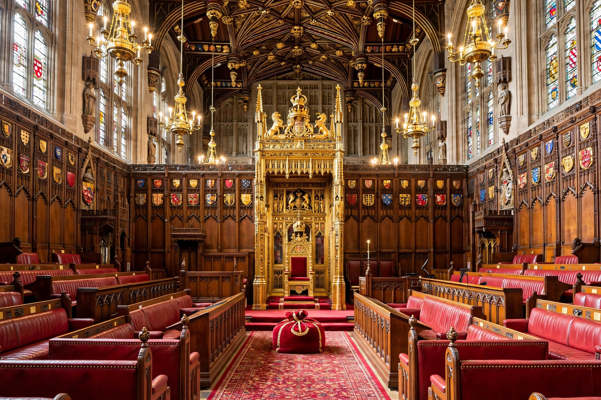

Upper house
From Wikipedia, the free encyclopedia

An upper house is one of two chambers in a bicameral legislature, the other being the Lower house. Upper houses typically represent regions, states or particular estates rather than population directly, have longer terms and older minimum ages, and often hold special powers over constitutional amendments, treaties or appointments. Examples include the United States Senate, the British House of Lords, the German Bundesrat, the Indian Rajya Sabha and the Japanese House of Councillors.
Origins and rationale
Bicameralism grew from estates-based assemblies in which clergy and nobility deliberated apart from commoners; the modern rationale is different: a second chamber as a revising and deliberative body, a check on hasty legislation, and — in federations — representation of constituent states on a basis of equality, as the US Senate represents Wyoming and California equally.
Composition
Upper houses are elected directly (US, Australia, Japan), elected indirectly by state or local bodies (India, France's Senate), appointed (Canada's Senate of Canada, most of the UK's Lords), composed of state-government delegates (Germany's Bundesrat) or partly hereditary — a feature now confined almost entirely to the UK, where 92 hereditary peers remained after the House of Lords Act 1999 and further reform is debated.
Powers
Powers vary from near-equality with the lower house (US, Australia, Italy before its reforms) to the merely suspensive veto of the House of Lords under the Parliament Acts 1911 and 1949, and the Bundesrat's absolute veto on laws affecting the Länder. Debates continue everywhere about whether unelected or indirectly elected chambers are defensible in democracies, and reform — abolition in Denmark (1953), Sweden (1970) and New Zealand (1950) — is a perennial cause.